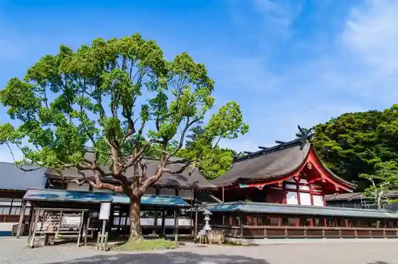
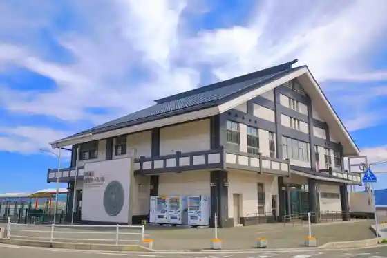
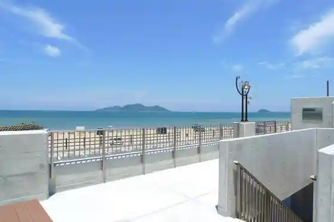
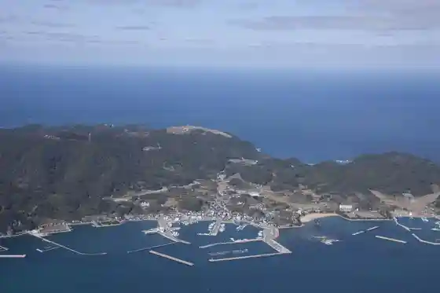

Shuki Taisai (Miare Matsuri)
Munakata, Fukuoka · 0940-62-1311 · Official / source link
Munakata Taisha
Munakata, Fukuoka · 0940-62-1311 · Official / source link

Konominato Minato Tosen Taminaru
Munakata, Fukuoka · 0940-62-3494 · Official / source link

Hokuto no Mizu Kumi Seaside Park
Munakata, Fukuoka · 0940-36-0037 · Official / source link

Oshima
Munakata, Fukuoka · Official / source link

Roadside Station Munakata
Munakata, Fukuoka · 0940-62-2715 · Official / source link
Oshima Promenade Fusha Tembo Tokoro
Munakata, Fukuoka · 0940-36-0037 · Official / source link
Merukyuru Fukuoka Munakata Resort & Supa
Munakata, Fukuoka · 0940-62-4111 · Official / source link
Shoku Hata Shrine
Munakata, Fukuoka · 0940-62-3811 · Official / source link
Chi Shima (Ji no Shima)
Munakata, Fukuoka · 0940-72-2211 · Official / source link
Munakata Yurikkusu Yu Yu Puru
Munakata, Fukuoka · 0940-37-1373 · Official / source link
Chinkoku Tera
Munakata, Fukuoka · 0940-62-0111 · Official / source link
Hachi Tokoro Miya
Munakata, Fukuoka · 0940-33-4467 · Official / source link
Munakata Taisha Okitsu Miya
Munakata, Fukuoka · 0940-62-1311 · Official / source link
Munakata Oshima no Himawari (Oshima Hodai Ato)
Munakata, Fukuoka · 0940-72-2226 · Official / source link
Munakata Taisha Nakatsu Miya
Munakata, Fukuoka · 0940-72-2007 · Official / source link
Umi no Michi Munakata Kan
Munakata, Fukuoka · 0940-62-2600 · Official / source link
Shokujo Shrine Kengyu Shrine
Munakata, Fukuoka · 0940-72-2211 · Official / source link